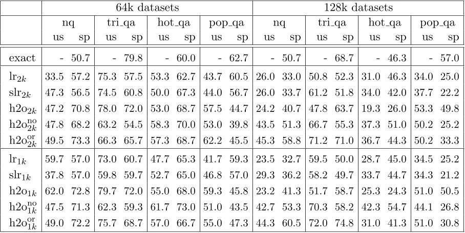

Learning how to Forget: Fine-tuning for Long-Context Sparse Attention
A fine-tuning approach lets transformer models co-adapt to sparse KV-cache attention, enabling efficient long-context inference on moderate hardware.
- Efficient AI
- Efficient Attention
- KV Cache and Memory Efficiency